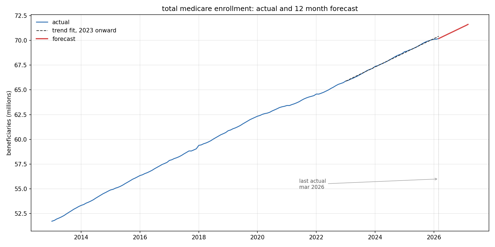

Maya Maison — Data Analyst — San Antonio, TX
A forecast that cannot be defended is worse than no forecast, because someone will staff to it.
— from the Medicare enrollment analysis, below
The work
I spend most of my time on the part of analysis nobody photographs: checking whether the thing I'm about to claim actually holds.
In the Medicare project, that meant writing down what I expected before running the test, and reporting it when the data proved me wrong. It meant noticing that an R-squared of 0.9984 was hiding a structural break. And it meant refusing to forecast the number I'd built the whole model to forecast, because the pattern behind it had collapsed and no honest version of that projection existed.
Seven years across healthcare benefits, medical device logistics, and supply chain reporting. Currently an Omnichannel Analyst at Mattress Firm, owning enterprise invoicing, GL coding, and the Power BI reporting that goes to directors. Finishing an M.S. in Artificial Intelligence.
Selected projects
2026

Healthcare · Forecasting · Python
Medicare Enrollment Seasonal Forecasting
Thirteen years of CMS enrollment data. I set out to build a seasonal index for capacity planning and found that open enrollment does not drive enrollment at all. It drives plan switching — 794,000 people every January, invisible in the total because the components cancel.
Verdict: the index describes a regime that ended. Projecting it would overstate January by 9×. Do not forecast the switch.
- Data
- CMS API · 159 months · live pull
- Method
- 2×12 MA decomposition, seasonal index, stability testing
- Found
- Switching collapsed 94% since 2021
- Delivered
- Trend forecast + capacity recommendation
Read the analysis →

Marketplace · Vendor Performance · Python
Olist Seller Performance & SLA Analytics
Line-level OTIF across 2,970 sellers, treating vendors the way a supply chain team does in a live operation. I built a WAR score — wins above replacement, borrowed from baseball — to rank sellers by how much platform SLA would move if you removed them.
Verdict: late rate hides two different risk profiles. The geographic analysis was scoped, tested, and cut.
- Data
- Olist marketplace · 2,970 sellers
- Method
- Line-level OTIF, WAR vendor impact modeling
- Found
- 91.9% platform SLA · ~7,800 late deliveries
- Cut
- State-level analysis — data too thin to defend
Read the analysis →